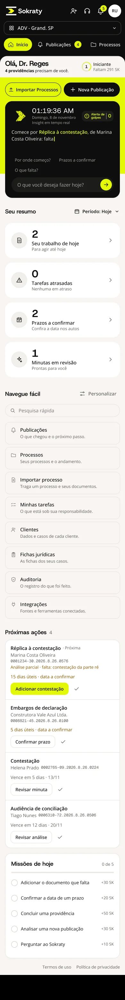
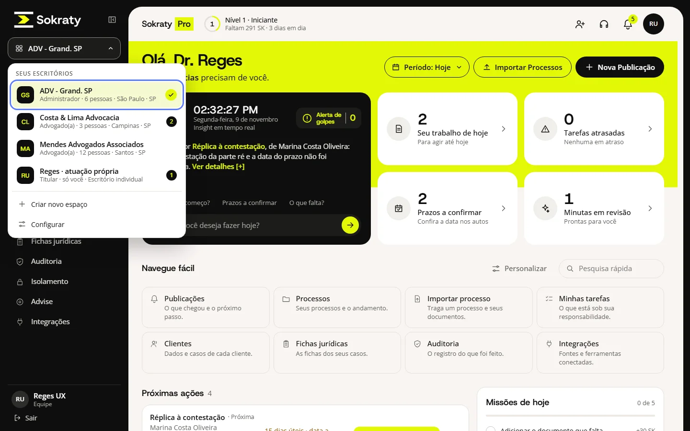

Software jurídico que o advogado entende de primeira.
A Sokraty já tinha a inteligência. Faltava a tela. Redesenhamos a plataforma a partir da tarefa do advogado, não da lógica do sistema: a tela inicial diz o que fazer hoje, e a publicação vira minuta em 5 etapas.

precisam de você hoje
pra sua revisão
A tela seguia o motor.
Agora segue o advogado.
Quem usava a plataforma antiga tinha dificuldade. O diagnóstico: as telas mostravam como a análise funciona por dentro, e não o que o advogado precisa fazer em seguida.
Antes
- ×Telas organizadas pelas etapas internas da análise.
- ×Muitas decisões na mesma tela, sem dizer por onde começar.
- ×Prazo, documento e minuta espalhados em lugares diferentes.
Depois
- 1A tela inicial abre com o que precisa de você hoje.
- 2Cada publicação segue um caminho só, com a etapa sempre à vista.
- 3A IA sugere, mas quem decide é o advogado: nada é protocolado sozinho.
Menos decisões por tela. Uma ação clara em cada uma.
Abriu, já sabe o que fazer.
Nada de painel com 40 números. A tela responde três perguntas: o que é urgente, o que falta e qual o próximo passo. Clique nos itens para ver cada parte.
Cinco etapas. Sempre à vista.
O advogado cola ou anexa a publicação e segue uma linha só. Cada etapa mostra o que já foi feito, o que vem depois e o que ainda depende dele.
Um escritório ou vários. No computador ou no celular.
Troca de escritório em um clique
Quem atende mais de um escritório vê todos no menu, com o papel em cada um e quantas providências esperam lá. Sem sair e entrar de novo.

A mesma tela, no bolso
O menu vira pílulas no topo, os resumos se empilham e a ação principal continua a um toque.
Tinta, lima e nada sobrando.
A identidade nova entrou na interface: moldura escura, a ação principal em lima e o slogan Tecnologia jurídica inteligente.

Títulos em Host Grotesk, texto em Open Sans e números de processo em Geist Mono, para ler sem esforço.
ΣΩΚΡΑΤΗΣ: em grego, o nome de Sócrates começa e termina em sigma. Na matemática, o mesmo sinal significa soma. Um único caractere liga a filosofia à tecnologia, sem busto e sem coluna.
Primeiro a tarefa. Depois a tela.
Diagnóstico
Lemos as telas atuais e listamos onde o usuário trava, com o motivo de cada travada.
Referências
Comparamos com os concorrentes e com apps que o público já usa bem, como bancos digitais.
Protótipo navegável
Em HTML, não em imagem: dá para clicar, testar estados e abrir no celular de verdade.
Ajuste com o cliente
Cada rodada vira uma versão nova, com o que mudou e por quê. O código vai pronto para o time.
Seu sistema é bom, mas difícil de usar?
Conta como ele funciona hoje. Em 30 minutos a gente mostra onde o usuário trava e o caminho para resolver.